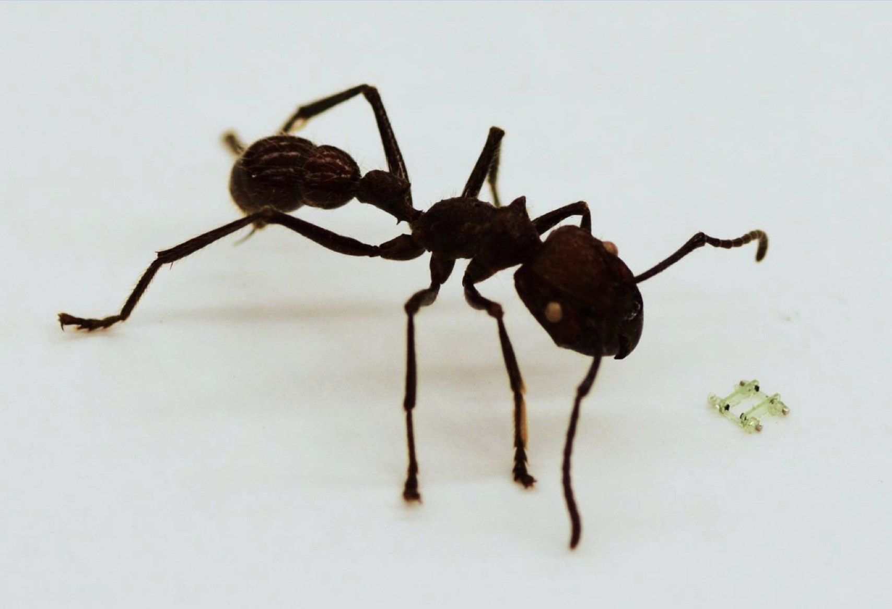

All About Robots: Penny-Sized Ionocraft, Caltech's LEg ON Aerial Robotic DrOne (LEONARDO), Smallest Legged Robot in Existence
Penny-Sized Ionocraft Flies With No Moving Parts

Biological insects are masters of efficient small-scale flying. Insect-scale flying robots are usually designed by studying and recreating the structure, control and technique of biological insects. Generally labelled flapping-wing micro air vehicles (FMAVs) approach the size of real insects. One of the most impressive demonstration has been RoboBees by Wyss Institute at Harvard University. Making a tiny robot with flapping wings that can move in all of the degrees of freedom necessary to keep it controllable is tricky, though, requiring complicated mechanical transmissions and complicated software as well.
Electrohydrodynamic (EHD) thrusters, sometimes called ion thrusters,* use a high strength electric field to generate a plasma of ionized air. The ions (mostly positively charged nitrogen molecules) are drawn toward a negatively charged grid, and along the way, they smack into neutral air molecules and impart momentum to them, which is where the EHD thrust comes from. This is the ionocraft, currently under development at UC Berkeley. It’s tiny— just 2 cm x 2 cm, weighing 30 mg, plus a 37-mg IMU (although power is supplied through a tether). At small scales, the lack of moving parts becomes a real asset, because you don’t have to worry about figuring out how to scale mechanical things like transmissions down beyond a point where it will be really frustrating at best and impossible at worst. Including its IMU payload, the ionocraft was able to take off and hover with an input of 2,000 volts at just under 0.35 mA.
Caltech Building Agile Humanoid Robot by Combining Legs With Thrusters

Over the past year, we’ve seen several different projects that are enhancing the capabilities of humanoid robots by augmenting them with integrated thruster systems. There’s Jet-HR1, which uses foot-mounted ducted fans to cross large gaps, and of course IIT’s jet-powered flying iCub project. At Caltech’s Center for Autonomous Systems and Technologies (CAST), researchers are in the process of developing a new robot called the LEg ON Aerial Robotic DrOne, or Leonardo, which in addition to having one of the most creative acronyms we’ve seen in a while, combined a bipedal robot with a dronelike thruster system for balancing, agility, and the ability to leap tall buildings in a single bound.
Four-Legged Walking Robot Is Smaller Than an Ant's Face

The designer, Ryan St. Pierre from Sarah Bergbreiter’s lab at the University of Maryland has developed a robot that is just 2.5mm long and about 10 times smaller than once presented at IRCA 2016 the microrobot measures 2.5 mm x 1.6 mm x 0.7 mm. The design is loosely based on rotary legged robots like RHex, which has a mass more than a million times bigger than the microquad. Like its predecessors, this robot is far too small for traditional motors or electronics. Its legs are controlled by external magnetic fields acting on tiny cubic magnets embedded in the robot’s hips. Rotating magnetic fields cause the magnets to rotate, driving the legs at speeds of up to 150 Hz. With all of the magnets installed into the hips in the same orientation, you get a proking gait, but other gaits are possible by shifting the magnets around a bit. Top speed is an impressive 37.3 mm/s, or 14.9 body lengths per second, and somewhat surprisingly, the robot seems to be quite durable—it was tested for 1,000,000 actuation cycles “with no signs of visible wear or decreased performance.